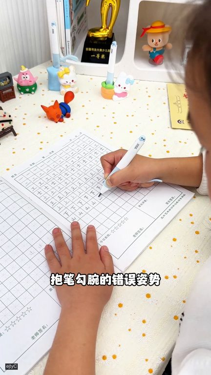
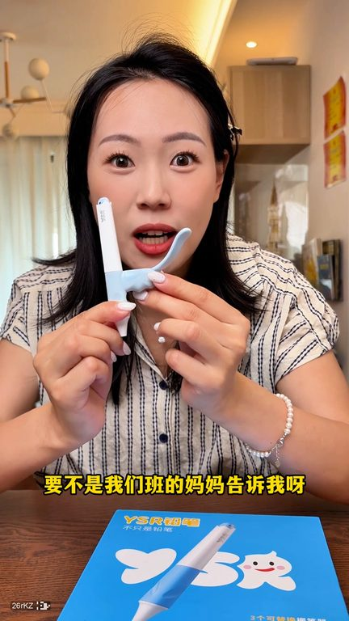
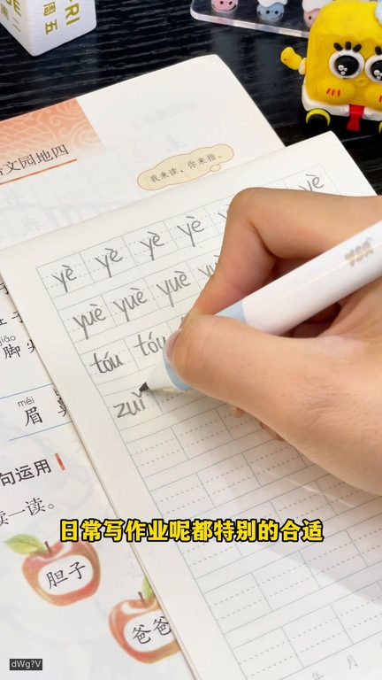

TOP 1 · 代表素材深度拆解
核心放量 稳健
视频为原始素材 HTTPS 链接；点击后加载，建议在网络环境良好时播放。
8.5万素材消耗
2.03%CTR
100.0%类目消耗占比
+0.00pp较类目均值
表现判断
该素材是类目内第 1 名，属于“核心放量”；CTR 高于类目均值。消耗体现承接规模，CTR 体现首屏与定向效率，两项应结合判断，不能仅以单指标下结论。
表达标签
口播三段式证据
开场钩子我去原来这支笔真的是专为写字向狗爬的我设计的就是这个YS2000笔幼儿园刚开始学写字的孩子别用普通签笔一旦形成暴笔勾万的错误姿势就特别难纠正孩子的第一支签笔千万不能随便选因为一旦初期握笔姿势错了
中段论证怎么这么多的没想到吧就连老师都天天地点名表扬真每次听到这样的发奖我都想告诉这位家咱们一个秘密其实孩子写字好看真的不只是练习的问题这选对一支签笔踩着指锋的一半我家宝贝从第一天握笔开始用的就是这个YSR签笔谁能想到一支小小的签笔进了能让孩子在写字的路上少走这么多弯路不仅知识标准写字的速度也快了不少它是根据还是握笔时期三的阶段来设计的不许分析从手腕手掌手指全方面引…
结尾转化而且这个笔杆会更粗一些小朋友也不用用腻的去捏写字也不会烙出简字像孩子练字日常写作业都特别的合适有多款颜色可选孩子用着喜欢人的签笔学习兴趣都大大提升了趁现在活动上心抓紧给娃捆绑
有效点
- CTR 2.03% 高于类目均值 2.03%，开场或人群指向具备点击优势
- 口播包含明确到手机制或直播间指令，转化路径较完整
迭代动作
- 保留当前高效钩子，复制 3 个变量版本：人物、首句和首帧分别单变量测试
- 视频时长偏长，建议剪出 30–45 秒短版，仅保留钩子、两项证据和一次 CTA
- 复核功效、绝对化及价格稀缺措辞；增加适用边界和效果因人而异提示
合规关注

钩子建立 · 10.5s
场景/问题展开 · 79.7s

卖点证据 · 183.4s

转化收口 · 252.6s
查看完整口播摘要
我去原来这支笔真的是专为写字向狗爬的我设计的就是这个YS2000笔幼儿园刚开始学写字的孩子别用普通签笔一旦形成暴笔勾万的错误姿势就特别难纠正孩子的第一支签笔千万不能随便选因为一旦初期握笔姿势错了改起来真的难于登天而YS2这款三接正姿签笔科学进阶一接防止孩子错误勾手写字二接引导五指回到正确位置三接助力养成正确姿势科学进阶让孩子更容易养成正确握笔姿势3.15毫米加粗墨金千辛怎么写都不怕断写起来顺滑流畅现在新品上市价格优惠一盒十支千辛可以用一个学期还送橡皮和旋转卷笔刀这笔投资太值了快给孩子选一套吧从中班开始如果你能让孩子每天坚持练字你就会知道他写的字有多漂亮推荐这套YS2000笔专为初学写字的孩子设计一接防止孩子错误握笔勾万二接引导无止回到正确位置三接助力养成正确姿势不用家长反复调整还搭配了十支3.15毫米的加粗笔心不仅书写流畅还耐造不易断转笔刀和橡皮擦也都配齐了这一套能从一儿园用到小学了孩子写好字大人也省心多了我忘了一件好事怎么这么多的没想到吧就连老师都天天地点名表扬真每次听到这样的发奖我都想告诉这位家咱们一个秘密其实孩子写字好看真的不只是练习的问题这选对一支签笔踩着指锋的一半我家宝贝从第一天握笔开始用的就是这个YSR签笔谁能想到一支小小的签笔进了能让孩子在写字的路上少走这么多弯路不仅知识标准写字的速度也快了不少它是根据还是握笔时期三的阶段来设计的不许分析从手腕手掌手指全方面引导孩子掌握正确握笔和发力知识一接防勾万从源头解决勾万问题运笔更灵活二接引导物质回到正确位置久写更轻松三接让孩子掌握形成肌肉记忆换笔也能有正确的知识更让我惊喜的是这个笔也太懂事了吧还有3.15毫米加粗墨基女心完全不怕孩子出学时期用力过猛断心还贴心配备了十支替换女心一盒真的可以用大半年的套装里面还配置了不伤手的半方必整笔道这一套真的是太方便了所以说家咱们别让一支小小的签笔耽误了咱们孩子养成好习惯的最佳时期好的开始是成功的一半从它一支对的笔开始吧我竟然在学霸的书桌上看到这么高级的签笔不像我们的签笔显字又累又不好看它这个一拿上就是老师都夸的标准姿势写出来的字都是整整齐齐的里面包含一支握笔自动正姿手腕自动归位了人体工学矫正笔一支贴合无纸久写不累的作业笔一支习惯养成尿笔生花的链子笔这边还有橡皮千辛和卷笔刀日常所需要的文具它都配齐了甚至还送你一百多节的书法课和链子册这么高级又实用的签笔不管是自用送人都合适从来都没见过这种自带小尾巴的签笔要不是我们班的学霸妈妈告诉我我都不知道孩子作业经常得A的秘密竟然是用对了签笔普通签笔握着这上泥秋孩子根本就握不住笔就有力形成暴笔勾万的坏习惯而你看这个YSR的签笔用它写出来的字就像印刷的一样手感和普通签笔完全都不一样初阶的能够在手腕处提供阻力写字的时候就好像有一只手在扶着扶住孩子的手腕在一条直线上中阶的就是让你的手指摆放在正确的位置上孩子写字轻松不累手高阶是养成好习惯摆脱扶住的关键只有握笔的姿势对了字才会越写越好不仅搭配了四本同步练字册不用加长反复的调整而且这个笔杆会更粗一些小朋友也不用用腻的去捏写字也不会烙出简字像孩子练字日常写作业都特别的合适有多款颜色可选孩子用着喜欢人的签笔学习兴趣都大大提升了趁现在活动上心抓紧给娃捆绑